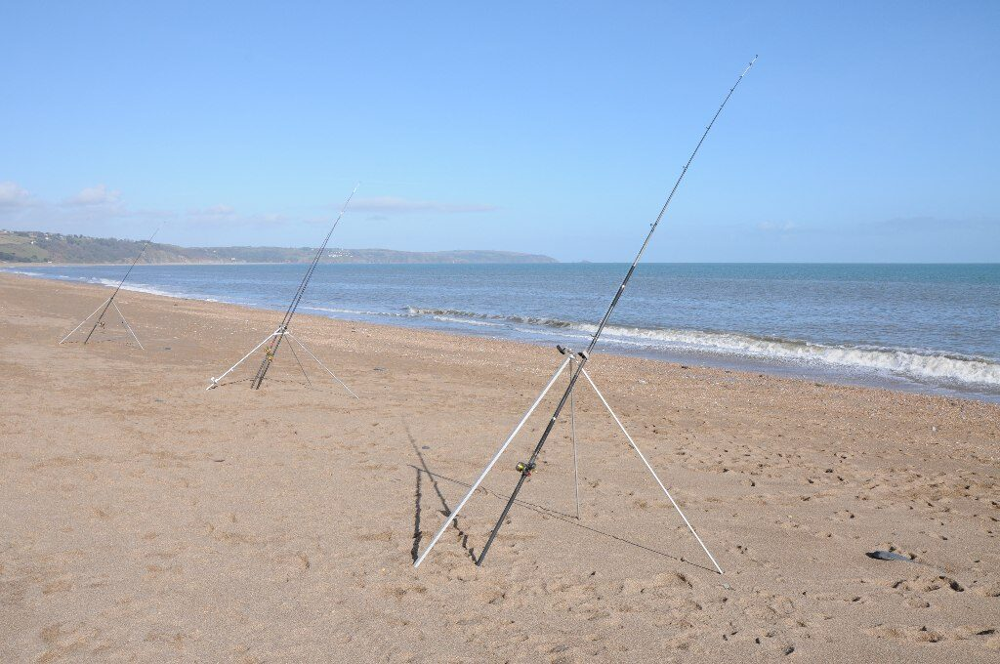

Zanim zaczniesz — formalności
Pozwolenie na rybołówstwo rekreacyjne
Połów wędką w polskich obszarach morskich (morze terytorialne, Zatoka Gdańska, Zalew Szczeciński i Wiślany w częściach morskich) to rybołówstwo rekreacyjne, regulowane odrębnie od wód śródlądowych — karta wędkarska i zezwolenia PZW tu nie wystarczają ani nie są właściwe. Wymagane jest dopełnienie formalności wobec administracji rybołówstwa morskiego: organem właściwym jest Główny Inspektorat Rybołówstwa Morskiego (GIRM), a pozwolenie/wniesienie opłaty załatwia się m.in. elektronicznie. Zasady, stawki i okresy ważności bywają zmieniane, dlatego zawsze sprawdź aktualne wymagania na stronie GIRM przed wyjazdem. Podczas łowienia miej przy sobie dokument tożsamości i dowód dopełnienia formalności — na wybrzeżu kontrole inspektorów są regularne.
Limity, wymiary i okresy ochronne na morzu
Wędkarstwo morskie ma własny katalog wymiarów ochronnych, limitów dziennych i okresów ochronnych, ustalany w przepisach krajowych i unijnych — odrębny od regulaminu PZW. Dotyczy to m.in. troci, łososia, sandacza w wodach zalewów, a szczególnie dorsza, dla którego w ostatnich latach wprowadzano daleko idące ograniczenia (o czym niżej). Przepisy te są korygowane nawet w trakcie sezonu, więc nie podajemy tu konkretnych liczb jako obowiązujących: jedynym wiarygodnym źródłem są aktualne komunikaty GIRM i obowiązujące rozporządzenia. Zasada praktyczna: przed każdym wyjazdem nad morze poświęć kwadrans na sprawdzenie, co aktualnie wolno łowić, w jakich ilościach i wymiarach.
Gatunki i metody
Dorsz — uwaga na okresowe zakazy i limity
Dorsz przez dekady był symbolem bałtyckiego wędkarstwa z kutra, jednak stan jego stad dramatycznie się pogorszył i w ostatnich latach na znacznej części Bałtyku obowiązywały okresowe zakazy lub bardzo restrykcyjne limity połowu, obejmujące także rybołówstwo rekreacyjne. Status tych ograniczeń zmienia się z roku na rok i bywa różny w poszczególnych podobszarach morza — dlatego nie zakładaj niczego na podstawie starszych relacji czy poradników. Przed planowaniem rejsu „na dorsza" bezwzględnie zweryfikuj aktualne przepisy w komunikatach Głównego Inspektoratu Rybołówstwa Morskiego i u armatora kutra. Jeżeli połów jest dopuszczony, klasyczna metoda to pilkowanie z dryfującej jednostki; jeżeli nie — armatorzy zwykle oferują rejsy ukierunkowane na inne gatunki.
Śledź — zestawy z kilkoma przyponami
Śledź to najbardziej dostępna bałtycka ryba, łowiona masowo z falochronów, mol i nabrzeży portowych (np. w okolicach Helu, Gdyni, Władysławowa, Kołobrzegu i Świnoujścia), głównie gdy ławice podchodzą pod brzeg — tradycyjnie w chłodnych miesiącach, z wiosennym szczytem przed tarłem, choć terminy potrafią przesuwać się z roku na rok. Zestaw to tzw. choinka: kilka krótkich przyponów z małymi haczykami zdobionymi srebrzystą folią, koralikiem lub kawałkiem czerwonej koszulki, zakończona ciężarkiem 40–80 g; całość opuszcza się przy ścianie falochronu lub wyrzuca niedaleko i prowadzi pionowym pulsowaniem. Wystarczy mocniejszy spinning lub lekki kij morski. Sprawdź lokalnie, czy łowienie z danego falochronu jest dozwolone — części budowli portowych dotyczą zakazy wstępu, a liczba haczyków w zestawie może być limitowana przepisami o rybołówstwie rekreacyjnym.
Belona — wiosenno-letni sprint przy brzegu
Belona pojawia się przy polskim brzegu zwykle od maja do lata, gdy woda się nagrzewa, i dostarcza znakomitego sportu z molo, falochronów i plaż. Łowi się ją spinningiem: długie, smukłe błystki wahadłowe 15–30 g rzucane daleko i prowadzone szybko pod powierzchnią, a także zestawy z bombardą (sbirulino) i przyponem z wąskim paskiem ryby lub błystką muchową. Twardy, wąski pysk belony sprawia, że wiele brań to puste uderzenia — pomagają drobne kotwiczki, dodatkowy haczyk wleczony za błystką na krótkim przyponie lub po prostu spokojniejsze zacięcie po wyraźnym obciążeniu kija. To bardzo widowiskowa ryba: skacze, kręci się w powietrzu i wymaga utrzymania stałego napięcia żyłki.
Płastugi — stornia z brzegu na zestawy gruntowe
Stornia (flądra) to podstawowy cel gruntowego łowienia z plaży i falochronów, dostępny przez większość roku, z lepszymi okresami od lata do późnej jesieni. Zestaw: dwa krótkie przypony na rozgałęzieniu nad ciężarkiem 60–120 g (na fali i prądzie sprawdzają się ciężarki z wąsami kotwiczącymi), haczyki nr 4–1 z długim trzonkiem, a przed nimi pływające koraliki lub fosforyzujące perełki, które unoszą przynętę i wabią płastugi. Przynęty: morskie robaki (nereidy), kawałki ryby, a w wersji „awaryjnej" dżdżownice. Stornia żeruje chętnie po zmroku i przy lekko wzburzonym morzu; brania sygnalizuje stukaniem szczytówki. Pamiętaj o obowiązującym wymiarze ochronnym i ewentualnych okresach ochronnych — weryfikuj je w aktualnych przepisach morskich.
Surfcasting — daleki rzut z plaży
Surfcasting to wyspecjalizowane łowienie gruntowe z otwartej plaży, gdzie liczy się dystans: ryby często żerują za drugą–trzecią rewą, kilkadziesiąt i więcej metrów od brzegu. Sprzęt to długie wędki surfcastingowe 3,9–4,5 m o ciężarze wyrzutowym 100–200 g, duże kołowrotki z zapasem żyłki 0,30–0,35 mm lub plecionki ze strzałówką (przyponem strzałowym) amortyzującą siłę rzutu, oraz wysokie stojaki trzymające kij ponad falami przyboju. Czytanie plaży jest połową sukcesu: szukaj rynien między rewami, końcówek główek falochronowych i miejsc, gdzie fala załamuje się nieregularnie — tam prąd wymywa pokarm. Nocne zasiadki z fosforyzującymi szczytówkami i czołówką to klasyka tej metody; ubierz się jak na zimową zasiadkę, bo wiatr znad morza wychładza błyskawicznie.
Łowienie z kutra — pilkery i organizacja rejsu
Rejsy wędkarskie kutrami i łodziami motorowymi wypływają z większości portów wybrzeża; miejsca rezerwuje się u armatorów z wyprzedzeniem, zwłaszcza na weekendy i sezon. Klasyczny sprzęt pokładowy to krótszy, mocny kij 2,1–2,4 m o c.w. 100–300 g, solidny kołowrotek (stacjonarny o dużej szpuli lub multiplikator) i plecionka 0,17–0,25 mm. Podstawowa przynęta to pilker — ciężka metalowa imitacja rybki 60–150 g, opuszczana do dna w dryfie i prowadzona podrywaniem; powyżej pilkera często montuje się 1–2 przypony z gumami lub dżigami (sprawdź dopuszczalną liczbę haczyków w aktualnych przepisach). Praktyka pokładowa: słuchaj komend szypra co do strony burty i głębokości, używaj zachowawczo mocnych zestawów (zaczepy o dno i sąsiadów zdarzają się każdemu) i zabezpiecz sprzęt przed kołysaniem. Na chorobę morską najlepiej działają profilaktyka (lekki posiłek, środki przyjęte przed rejsem zgodnie z ulotką, patrzenie na horyzont, pozycja na śródokręciu) — w razie silnych prognoz falowania rozważ przełożenie rejsu.
Troć z brzegu — spinning plażowy
Trociowy spinning plażowy to najbardziej wymagająca i prestiżowa odmiana bałtyckiego brzegowego łowienia, uprawiana głównie od jesieni do wiosny, gdy troć podchodzi pod brzeg. Sprzęt: spinning 2,7–3,3 m o c.w. około 15–40 g, pozwalający daleko posłać przynętę ponad przyboje, kołowrotek 4000 z plecionką i przyponem z fluorocarbonu. Przynęty to przede wszystkim wahadłówki 18–30 g w srebrze, miedzi i barwach pomarańczowych oraz smukłe woblery morskie; prowadzenie raczej spokojne, z przerwami, w rynnach i za rewami. Standardem są spodniobuty lub wodery z paskiem i kurtka sztormowa — ale brodzenie w przyboju wymaga rozwagi, bo fala potrafi przewrócić. Uwaga prawna: troć i łosoś objęte są wymiarami, limitami i okresami ochronnymi, a w okresach tarłowych obowiązują dodatkowe ograniczenia przy ujściach rzek — szczegóły zweryfikuj w aktualnych przepisach morskich (GIRM), a na samych rzekach w regulaminach PZW.
Planowanie
Pory roku na Bałtyku
Orientacyjny kalendarz — terminy przesuwają się zależnie od pogody i temperatury wody:
- Zima i wczesna wiosna — szczyt spinningu trociowego z brzegu i trollingu morskiego, podchody śledzia pod falochrony.
- Wiosna — śledź, początek belony, stornia coraz aktywniejsza.
- Lato — belona, stornia (zwłaszcza nocą), rejsy pełnomorskie zależnie od dostępnych gatunków.
- Jesień — najlepszy okres na stornię z plaży, powrót troci pod brzeg, ostatnie spokojne okna pogodowe na rejsy.
Nad morzem to pogoda układa plan: kierunek i siła wiatru decydują o klarowności wody przy brzegu (wiatry dolądowe mącą i podnoszą falę), a prognozy falowania o tym, czy kuter w ogóle wyjdzie z portu. Elastyczność terminu jest nad Bałtykiem cenniejsza niż najlepszy sprzęt.
Sprzęt a sól — konserwacja
Słona woda i aerozol morski niszczą sprzęt szybciej niż cokolwiek na wodach słodkich. Po każdym łowieniu opłucz wędki, kołowrotki (bez zanurzania, delikatnym strumieniem słodkiej wody), przynęty i akcesoria, a następnie wysusz; kołowrotki morskie smaruj zgodnie z zaleceniami producenta częściej niż słodkowodne. Kotwiczki i agrafki po kontakcie z solą rdzewieją w kilka dni — przeglądaj pudełka po powrocie. Do łowienia z brzegu wybieraj przelotki i elementy o podwyższonej odporności na korozję; tani sprzęt słodkowodny przetrwa nad morzem sezon, ale wymaga tym sumienniejszego płukania.
FAQ — najczęstsze pytania
Czy nad morzem wystarczy karta wędkarska i składki PZW?
Nie. Wody morskie podlegają przepisom o rybołówstwie rekreacyjnym, odrębnym od ustawy rybackiej śródlądowej — wymagane jest dopełnienie formalności wobec administracji morskiej (organ: Główny Inspektorat Rybołówstwa Morskiego). Aktualny tryb, opłaty i okresy ważności sprawdź na stronie GIRM przed wyjazdem; zasady bywają inne dla łowienia z brzegu i z jednostek pływających.
Czy mogę łowić dorsza na Bałtyku?
To zależy od aktualnie obowiązujących przepisów — w ostatnich latach połów dorsza w rybołówstwie rekreacyjnym na znacznych obszarach Bałtyku był okresowo zakazany lub silnie limitowany, a regulacje zmieniają się z sezonu na sezon i między podobszarami morza. Jedyną wiarygodną odpowiedź dadzą bieżące komunikaty GIRM i informacja u armatora kutra. Nie planuj rejsu „na dorsza" na podstawie starych relacji.
Jaki najprostszy zestaw na start nad morzem?
Najtańszy i najpewniejszy start to śledź z falochronu (mocniejszy spinning, gotowe zestawy „choinki", ciężarek) albo stornia z plaży (kij gruntowy lub mocny feeder do 120 g, zestaw dwuprzyponowy z koralikami, robaki morskie). Obie metody nie wymagają drogiego sprzętu, a uczą specyfiki morza: fali, prądów i czytania brzegu.
Jak poradzić sobie z chorobą morską na kutrze?
Działaj zapobiegawczo: wyśpij się, zjedz lekkie śniadanie, środki przeciw chorobie lokomocyjnej przyjmij zgodnie z ulotką przed wyjściem z portu, na pokładzie trzymaj się śródokręcia, patrz na horyzont i unikaj kabiny oraz wpatrywania się w ekran telefonu. Przy prognozie wysokiej fali rozważ zmianę terminu — zmęczenie chorobą i tak wyłączy cię z łowienia.
Czy z każdego falochronu i mola wolno łowić?
Nie — część budowli hydrotechnicznych i terenów portowych jest wyłączona z wstępu lub łowienia, a mola spacerowe mają własne regulaminy. Bywają też strefy zamknięte przy ujściach rzek w okresach ochronnych ryb wędrownych. Sprawdź oznakowanie na miejscu, lokalne zarządzenia i komunikaty GIRM; w portach decydują przepisy zarządu portu.
Źródła i weryfikacja
Treści mają charakter poradnikowy i nie obiecują wyników połowu ani nie stanowią porady prawnej. Zasady rybołówstwa rekreacyjnego w polskich obszarach morskich — w tym wymagane pozwolenia i opłaty, limity dzienne, wymiary i okresy ochronne (szczególnie dynamicznie zmieniane regulacje dotyczące dorsza, troci i łososia) — określają przepisy krajowe i unijne oraz komunikaty Głównego Inspektoratu Rybołówstwa Morskiego, które należy weryfikować przed każdym wyjazdem. Na wodach śródlądowych i przy ujściach rzek sprawdzaj dodatkowo aktualny Regulamin Amatorskiego Połowu Ryb PZW i regulaminy łowisk.
Przepisy morskie i granice
Zakres morski — stan na 17 lipca 2026: GIRM opisuje rekreacyjne rybołówstwo morskie, a rozporządzenie ELI określa przepisy dla polskich obszarów morskich. Dorsz jest objęty okresem ochronnym od 1 stycznia do 31 grudnia, więc nie jest celem rekomendowanym w tym poradniku. Źródła nie dotyczą śródlądzia; sprawdź aktualne komunikaty i warunki organizatora rejsu.